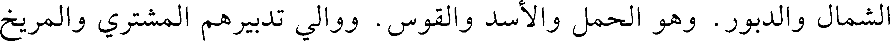
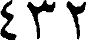
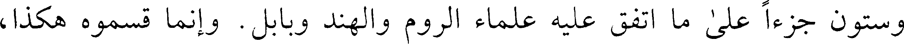
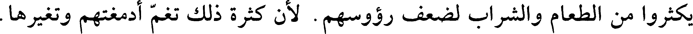
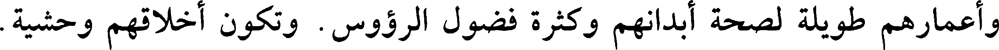
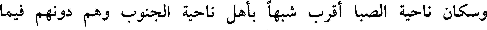
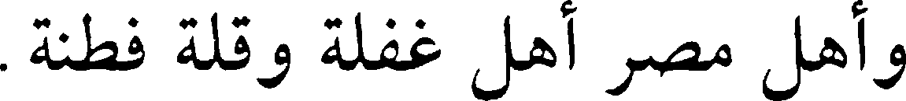
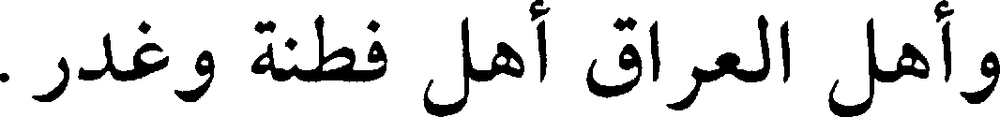

000513.gt.txt

والربع الثاني هو الذي من الجنوب والصبا. ولهم المثلثات: الثور والعذراء
000514.gt.txt

والجدي. ووالي تدبيرهم: الزهرة وزحل مشرقين. وطبائع هذه الكواكب على نحو
000515.gt.txt

طبائع الذي يدبرهم. فإنهم يسجدون لها ويسمعون الزهرة أنيس، والزحل يبسون،
000516.gt.txt

وفيه كهنة يخبرون عن الأشياء قبل أن تحدث. ويعظمون أمهاتهم وأخواتهم
000517.gt.txt

وجميع الإناث لتدبير الزهرة وزحل إياهم. وفيهم الورع، لأن الزهرة طبيعتها
000518.gt.txt

الورع. وبلادهم حارة ويحبون المجامعة والرقى والرقص واللهو والمجون من
000519.gt.txt

أجل الزهرة أيضا. ولا يجامعون الذكران، وينكحون أمهاتهم ويولدونهم ويرون أن
000520.gt.txt

ذلك تعظيم لهن. وأنفسهم عظيمة. وهم أشداء مقاتلون لتشريق زحل. ونصيب
000521.gt.txt

هذا الربع من وسط الأرض: أروميا وقيلسوسينا وتوريا وحلبايا. وهذه البلدان من
000522.gt.txt

الشمال والدبور. وهو الحمل والأسد والقوس. ووالي تدبيرهم المشتري والمريخ
000523.gt.txt

والشمس وعطارد. ولذلك صاروا أهل تدبير وصناعة وتجارة وعقل وسخاء
000524.gt.txt

وكتابة. وفيهم غش وخبث.
000525.gt.txt

وأما الربع الثالث:
000526.gt.txt

فمنها: أرمينية الأولى والثانية والثالثة والرابعة. والبلدان التي بين الشمال
000527.gt.txt

والصبا. وهو أحد ( ) (1) التي يقال لها الجامع. وواليها من المثلثات التي بين
000528.gt.txt

432
000529.gt.txt

الشمال والصبا وهي الجوزاء والميزان والدلو [100 أ] وأصحاب تدبيرها زحل
000530.gt.txt

والمشتري مشرقين، فلذلك صار الذين في هذه الكور يسجدون للشمس والمشتري
000531.gt.txt

وهم يشبهون المجوس وعباداتهم وآدابهم حسنة. ولهم ملاحة وقبول. ماضين
000532.gt.txt

للحق، مقتصدين في مجامعة النساء. ويحبون البر والصلة. وعامة ذلك من تشريق
000533.gt.txt

زحل والمشتري.
000534.gt.txt

فأما الربع الرابع الذي بين الحوت والميزان واليه من المثلثات: السرطان
000535.gt.txt

والعقرب والحوت. ومدبرهم من الكواكب: المريخ والزهرة مغربين. فأسماء
000536.gt.txt

الأمم التي في هذا الربع: قونيه وميدنيه وأفريقيه ومورطلينا وطنجه ومراميه.
000537.gt.txt

فلذلك أهل هذه البلاد يملكون رجلا وامرأة. فأما الرجل فيملك الرجال، والمرأة
000538.gt.txt

تملك النساء. ويحبون مجامعة الإناث وعامة نكاحهم زنى. ويحبون الزينة
000539.gt.txt

والمال، ويتزينون بزي النساء من أجل الزهرة. وهم أهل غش وسحر وجرأة [في
000540.gt.txt

إلقاء] أنفسهم في المهلكة من أجل المريخ وولايته إياهم.
000541.gt.txt

ونصيب هذا الربع من وسط الأرض وسقى وتمريقى والبرط السفلى واطرز
000542.gt.txt

المغرب ومارثها والحبشة والاسطون وهم ما بين الشمال والصبا.
000543.gt.txt

ولهم من المثلثات: التومين والميزان والدلو. ومدبرهم من الكواكب: زحل
000544.gt.txt

والمشتري وعطارد. وهذه الكور قريبة من مدار الكواكب الخمسة الجارية إذا كانت
000545.gt.txt

مغربة. ولذلك هم أهل تدين وتعظيم الآلهة. يعرفون حقها ويحبون النياحة. ولهم
000546.gt.txt

آداب كبيرة مختلفة وأديان متفرقة. وإذا ملكوا كانوا أذلاء جبناء صابرين. وإذا
000547.gt.txt

ملكوا كانوا أهل طيب أنفس وعطية كثيرة. وخلقهم على نحو طبيعة أرضهم.
000548.gt.txt

وعامة ذكرانهم ضعفاء مؤنثون يتركون الجماع من حيث ينبغي ويأتون النساء من
000549.gt.txt

حيث لا ينبغي لتقريب الزهرة.
000550.gt.txt

وذكروا أن الأرض والماء وسائر الطبائع كرية. وان استدارة الأرض كلها
000551.gt.txt

وجبالها وبحارها أربعة وعشرون ألف ميل. وان قطرها وعمقها وعرضها سبعة
000552.gt.txt

آلاف وستة وثلاثين. وانهم استدركوا ذلك بأنهم أخذوا ارتفاع القطب الشمالي في
000553.gt.txt

مدينتين هما على خط الاستواء مثل مدينة تدمر [100 ب] والرقة، فوجدوا ارتفاع
000554.gt.txt

433
000555.gt.txt

القطب في مدينة الرقة خمسة وثلاثين جزءا وثلثا. وارتفاع القطب في مدينة
000556.gt.txt

التدمر، أربعة وثلاثين، بينهما زيادة جزء وثلث. ثم مسحوا ما بين الرقة وتدمر
000557.gt.txt

فوجدوه سبعة وعشرين ميلا. فعلموا أن لكل جزء وثلث، جزء من أجزاء الفلك
000558.gt.txt

الأعظم. فالظاهر من الفلك سبعة وستون (1) ميلا من الأرض، والفلك ثلاثمائة
000559.gt.txt

وستون جزءا على ما اتفق عليه علماء الروم والهند وبابل. وإنما قسموه هكذا،
000560.gt.txt

لأنهم وجدوا الفلك قد اقتسمته البروج الاثنا عشر، ووجدوا الشمس تقطع كل برج
000561.gt.txt

منها في شهر وتقطع البروج في ثلاثمائة وستين يوما. فبهذه القسمة والمقاييس
000562.gt.txt

استدركوا علم الساعات والكسوفين. وبها استخرجوا الآلات والاصطرلابات
000563.gt.txt

وعليها وضعوا كتبهم.
000564.gt.txt

وقالوا أيضا: الفلك مستدير. واستدلوا بذلك لأنه يدور على محورين
000565.gt.txt

وقطبين، اللذين هما القطب الشمالي والجنوبي.
000566.gt.txt

وبنات نعش ولا يرون القطب الجنوبي ولا الكواكب القريبة منه. ولذلك صار
000567.gt.txt

سهيل (2) لا يرى بناحية خراسان ويرى في العراق أياما في السنة. فأما في البلدان
000568.gt.txt

الجنوبية فإنه يرى فيها السنة كلها. فمتى مال إلى الناحية الجنوب، غاب عنه
000569.gt.txt

القطب الشمالي والكواكب التي تقاربه. وهذه الكواكب التي هي قريبة من القطب
000570.gt.txt

ثم تغيب تحت الأرض. فتدور هناك مثلما تدور هاهنا حتى تطلع.
000571.gt.txt

وزعموا أن البحر أيضا كري مدور. وبرهان ذلك أنك إذا لججت فيه غابت
000572.gt.txt

عنك الأرض والجبال شيئا بعد شيء حتى خفي ذلك كله، ولا ترى شيئا من شوامخ
000573.gt.txt

الجبال. فإذا أقبلت نحو الساحل، ظهرت [101 أ] لك قلل الجبال وأجسامها شيئا
000574.gt.txt

434
000575.gt.txt

بعد شيء. فإذا قربت من الساحل، ظهرت الأرض والأشجار. والأرض قسمان:
000576.gt.txt

أحدهما مسكون والآخر غير مسكون. والمسكون منه قسمان: أحدهما مفرط الحر
000577.gt.txt

وهو جهة اليمين لأن الشمس تقرب منه فيلتهب هواؤه. والآخر جهة الشمال وهو
000578.gt.txt

مفرط البرد لبعد الشمس منه.
000579.gt.txt

فكل مدينة موضوعة في جهة المشرق فهي أشد اعتدالا وأقل اسقاما. لأن
000580.gt.txt

الشمس تصفي تلك المياه التي تجري فيها.
000581.gt.txt

والمدن الموضوعة بإزاء المغرب، تكثر أمراض أهلها لأن مياههم كدرة
000582.gt.txt

متغيرة، وهواؤهم غليظ، لأنه يبقي تلك الرطوبات فيه فتغلظ مياههم.
000583.gt.txt

والمدن الموضوعة على جهة الجنوب تكون مياهها حارة كدرة متغيرة مالحة
000584.gt.txt

لينة تسخن في الصيف وتبرد في الشتاء. وأبدان أهلها رطبة لينة لما يتحلب إليها عن
000585.gt.txt

الرطوبات من أرضهم. وتكثر نساؤهم الإسقاط بسبب الرطوبات ولا يقدرون أن
000586.gt.txt

يكثروا من الطعام والشراب لضعف رؤوسهم. لأن كثرة ذلك تغم أدمغتهم وتغيرها.
000587.gt.txt

وقلما تعرض لهم الحميات الحارة.
000588.gt.txt

والمدن الموضوعة في جهة الشمال على إزائه فإن مياهها فاسدة رطبة ثقيلة
000589.gt.txt

النضج. وأهلها أقوياء أشداء عراض الصدور دقاق السوق رؤوسهم صحيحة يابسة
000590.gt.txt

وأعمارهم طويلة لصحة أبدانهم وكثرة فضول الرءوس. وتكون أخلاقهم وحشية.
000591.gt.txt

ويقل حمل نسائهم، لكنهن لا يسقطن لبرد الماء ويبسه ويلدن بشدة وصعوبة وتتسع
000592.gt.txt

لذلك صدورهن. وإنما رقت سوقهن لارتفاع الحرارة عنها. ويكثرون الأكل ولا
000593.gt.txt

يكثرون الشراب.
000594.gt.txt

قال: وسكان ناحية الجنوب سود جعاد دقاق الكعوب كحل العيون سود
000595.gt.txt

الشعور خفاف اللحوم. فيهم الحفظ والذكاء والبر والطرب والحرص والسرقة.
000596.gt.txt

وسكان ناحية الصبا أقرب شبها بأهل ناحية الجنوب وهم دونهم فيما
000597.gt.txt

وصفت. وسكان ناحية الدبور أقرب شبها بأهل ناحية الجنوب وهم دونهم.
000598.gt.txt

وأهل المغرب مختلفون في هيئاتهم، فأما سكان سواحل البحر منهم فقريب
000599.gt.txt

435
000600.gt.txt

شبههم من سكان ناحية الجنوب. وسكان ناحية الصبا قريب شبههم بناحية الشمال.
000601.gt.txt

وأهل [101 ب] الهند ممتزجون لأن بلادهم من بلاد الشمال والجنوب.
000602.gt.txt

ولذلك حسنت أخلاقهم وأجسامهم ووجوههم واعتدلت. وكذلك من كانت محلته
000603.gt.txt

بين الشمال والجنوب وهم أعدل مزاجا وأحسن عقولا.
000604.gt.txt

وأهل مصر أهل غفلة وقلة فطنة.
000605.gt.txt

والبربر الفطنة فيهم فاشية، وليس فيهم كبر ولا لهم مكر.
000606.gt.txt

والروم أهل صلف وتكلف.
000607.gt.txt

وأهل الشام أهل غفلة وسلامة.
000608.gt.txt

وأهل الحجاز أهل معازف ولهو ومداعبة وتأنيث.
000609.gt.txt

وأهل العراق أهل فطنة وغدر.
000610.gt.txt

وأهل الهند أهل غفلة وشجاعة ولين.
000611.gt.txt

وأهل الصين أهل طلب وخفة وجبن وحذق بالصناعات.
000612.gt.txt

وأهل اليمن أهل غفلة وخفة ولين.